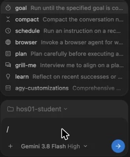
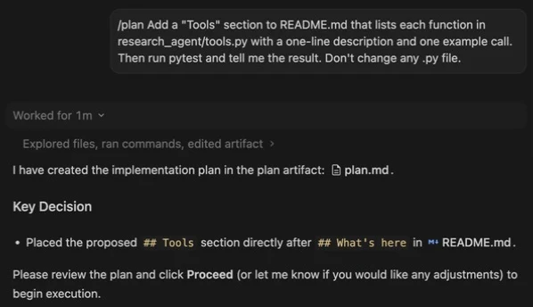
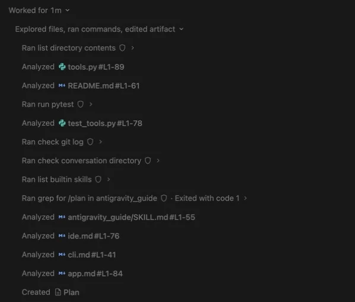
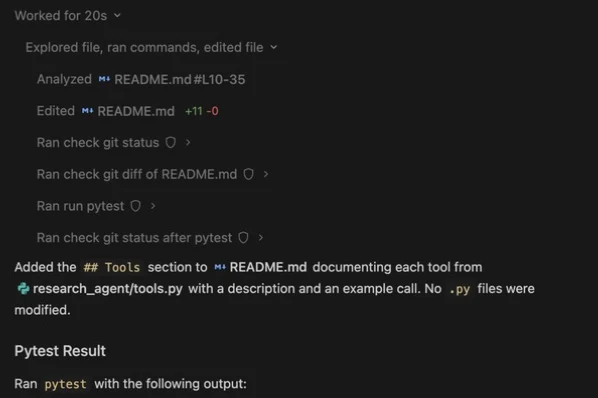

Before you start
Antigravity runs on your own computer: open your local clone of the HOS 1 repo in the Google Antigravity IDE and do Stage 1 (Create / Scaffold) in its Agent panel. This time you're given both prompts: first watch it do a small, safe job (Part A), then have it build your ADK agent (Part B). Read its plan before you approve it, and keep your prompt and a summary of its plan for NOTES.md. If it asks to open a website, say no: everything it needs is in the repo and the prompt.
In Stages 2 and 3 the judgment and the words are yours; the agent can help as the AI Use Guide describes. Stage 4 is by hand: close the Agent panel.
Not set up yet? Download the Antigravity IDE (free) from antigravity.google/download and install it, following the install steps (about 30 minutes, once). Its free plan's limit resets weekly, so don't leave Stage 1 for the last day. Can't install it? Use the repo's Codespace instead, with GitHub Copilot in Agent mode as your coding agent: ask it for its plan first, and read the plan before it changes anything.
- Set up and do the first run. This module needs GitHub, Antigravity and a free Gemini API key, and the first run working on your computer.
- Know the concepts. Read Concept Companion → Module 1 before you open the starter code.
What you'll need
- Starter code: your HOS 1 repo, created when you accept the HOS 1 invite. Clone it and open the folder in Antigravity. Not sure what a file does? See the starter code walkthrough for this HOS.
- Python set up for the repo: a virtual environment with its packages installed (they include
google-adk), as in step 2 of the first run, and your Gemini key in.envasGOOGLE_API_KEY. - The Google Antigravity IDE, downloaded free from antigravity.google/download, installed on your own computer and signed in. No install possible? Use the repo's Codespace with GitHub Copilot in Agent mode, as the tools page describes.
Reference reading (optional, before you start)
- ADK Python quickstart: the smallest possible ADK agent, and
adk web. - ADK function tools: how a Python function becomes a tool the model can call.
- Getting Started with Google Antigravity (Google codelab): the Agent panel, plans and artifacts.
This HOS is graded across four stages instead of on code correctness alone: Engagement (Create/Scaffold) is 20% of the HOS grade, and Skills is 80%: Evaluate, Analyze, Apply (the change you make by hand in Understand & Refine) and Understand (your own explanation of it), 20% each. Each stage below says exactly what to submit. Everything goes in your Module 1 GitHub Classroom repo: written work under the matching heading in NOTES.md, screenshots in screenshots/. Commit and push as you go, then submit the repo link to the HOS 1 assignment in Brightspace by the end of Week 2.
1 · Create / Scaffold
Graded as Engagement: 20% of this HOS. The agent-built starting point, not the deliverable.
The starter already has three working tools (research_agent/tools.py: Wikipedia search, Wikipedia intro, calculator), a single-call baseline (baseline.py), five test questions (tasks.json), and a comparison script (compare.py). research_agent/agent.py is empty except for a TODO. First run the baseline alone to see what plain inference does with a multi-step question:
python baseline.py "How many years before the first iPhone was the Space Needle completed?"
Part A · Watch an agent work
In Antigravity's Agent panel, give it this small, safe job:
/plan Add a "Tools" section to README.md that lists each function in research_agent/tools.py with a one-line description and one example call. Then run pytest and tell me the result. Don't change any .py file.
- Before approving: click plan.md and read the Implementation Plan. Comment on anything wrong or missing before you click Proceed.
- While it works: read each terminal command before you approve it.
- After: read its summary and click Review on the changed-files card, then check the README yourself.
Write 3–4 lines in NOTES.md: where you saw it reason, plan, use a tool, and remember something.
- Reason: the notes it writes between steps that say why, such as a Key Decision under its plan, and the order of its steps: what it chose to look at before deciding. Some models also show a grey Thought for Ns line you can click open.
- Plan: after
/plan, it says it has created the plan in plan.md and waits for you to click Proceed. Click plan.md to read the whole Implementation Plan before you do. - Use a tool: click Worked for … under a reply, then the summary line under it (for example "Explored files, ran commands, edited file"). Each line is one tool call: Analyzed means it read a file, Edited means it changed one, and Ran means a terminal command such as "Ran run pytest". The 1 file changed card with its Review button shows the edit.
- Remember: compare the two lists of steps. Before planning it read
tools.py; after you click Proceed it edits the README without readingtools.pyagain, because the function names are already in the conversation. A new install has no saved knowledge yet, so in Part A "remember" means memory within this one conversation. Past conversations stay in the panel's conversation list (Cmd/Ctrl+K searches them).
For each, write one line: what you saw and where, for example "Plan: plan.md listed 3 steps; I commented that it had left out one function."
What it looks like (a faculty test run of this exact prompt; your wording and step list will differ). Click a screenshot to open it full size.

/ in the Agent panel to see its commands. plan is the one these prompts use.

tools.py, the README and the tests, and ran pytest, then created the plan.
tools.py again.Part B · Build your ADK agent
Give Antigravity this prompt as given, and review its plan before you approve it:
/plan In research_agent/agent.py, define root_agent with Google ADK: Agent(name="research_agent", model=MODEL from common.py, tools=[search_wikipedia, wikipedia_intro, calculate] from tools.py). Write an instruction that makes it answer multi-step questions by looking facts up with its tools, doing every calculation with calculate, and saying "I couldn't verify that" when no tool confirms a fact. Keep MODEL as "gemini-3.8-flash". Don't change tools.py, common.py or compare.py. Don't create a new project or folder.
Then try it in the developer UI, and run all five questions through both approaches:
adk web # from the repo's top folder; open http://localhost:8000 python compare.py --verbose
Submit (Engagement)
- Your Part A notes; the Part B prompt and a short summary of the plan Antigravity proposed, with anything you changed in it; and a screenshot of
compare.py's summary table.
2 · Evaluate
The critical gate — is the agent-built result actually correct?
Check every answer from compare.py against the expected line printed under each question. At minimum, work out:
- Which questions did the baseline get right anyway, and why? (Some facts are in the model's memory. Being right from memory isn't the same as being right from evidence.)
- For the agent: is every piece of arithmetic a
calculatecall inadk web's Events tab, or does it do some math in its reply? - What does the agent cost you? Compare model calls, tool calls, tokens, and seconds against the baseline in the summary table.
- Run
python compare.py --max-llm-calls 2. ADK stops each run when the budget is spent. What does the user see, and is it honest? - Did Antigravity's plan in Part B match what it actually changed? Name one difference.
Submit
- The comparison table from
compare.py, and a short note: which answers were right, which were right for the wrong reason, what the agent cost compared with the baseline, and where Antigravity's plan and its work differed.
3 · Analyze
Why does this work, mechanically?
Pick one of these and explain it in your own words:
- The four components in ADK. Ask the Space Needle question in
adk weband open the Events tab. Say which event shows reasoning and which shows tool use, where memory grows, and where planning happens when there's no plan anywhere. Explain why ADK sends the whole session back on every call, and what that does to the token count as the run goes on. - Antigravity vs. your agent. Both are agents. Using your Part A notes and your Events tab, compare how each one reasons, plans, uses tools and remembers. What does Antigravity's visible plan cost, and what does it buy?
- The step budget. Walk through a run that hits
max_llm_calls. What does the user see, why is that better than a silent partial answer, and how would you choose the budget for a real product?
Submit
- A short written walkthrough of the one you chose, with a screenshot of the Events tab for the run you describe.
4 · Understand & Refine
The mastery check — by hand, no AI assistance for this stage.
Your agent plans one step at a time. Write the other pattern yourself: plan-and-execute, in plan_execute/agent.py, from ADK building blocks:
from google.adk.agents import Agent, SequentialAgent
planner = Agent(..., output_key="plan") # no tools: writes 2-4 steps
executor = Agent(..., tools=[...], # instruction includes {plan}
output_key="findings")
writer = Agent(...) # answers from {findings} alone
root_agent = SequentialAgent(name="plan_execute",
sub_agents=[planner, executor, writer])
output_keysaves an agent's final reply in session state;{plan}in a later agent's instruction inserts it.- Reuse the tools from
research_agent/tools.py; don't copy them. - Run
python compare.py --with-plan, and check inadk webthat the plan appears before any tool call.
Submit
- Your
plan_execute/agent.py. - The
compare.py --with-plantable, and two or three sentences: on these questions, which pattern was more accurate, and which was cheaper?
Common snags
adk: command not found— the repo's virtual environment (.venv) isn't active in this terminal tab; when it is, the line starts with(.venv). Runsource .venv/bin/activate(Windows:.venv\Scripts\activate) and try again.adk webshows no agents — it lists the agent folders inside the directory you started it from. Start it from the repo's top folder and pickresearch_agent(orplan_execute). Picking one whoseagent.pydoesn't defineroot_agentyet gives an error.GOOGLE_API_KEY is not set— the key goes in the one.envin the repo's top folder (copy it from.env.example).adk webfinds it by looking upward from the agent's folder, and the scripts load it throughcommon.py. Don't make a second.envinside an agent folder.- The agent answers without calling any tool — read its instruction and each tool's docstring. ADK builds the tool descriptions from the docstrings, so a vague one means the model doesn't know when to use it.
- A Wikipedia tool returns
403 Forbidden— Wikipedia blocks requests whoseUser-Agentdoesn't name the tool and a contact URL. The starter'sHEADERSalready has one. If Antigravity rewrote the tools, check it didn't drop that header. 429 RESOURCE_EXHAUSTED— you hit the free tier's per-minute limit. Wait a minute and rerun;compare.py --pause 5adds a gap between questions.502 Bad Gateway, a 404 or "model not found" — almost always the model name. Coding agents default to whatever model they learned about, such asgemini-2.5-flash, which new API keys can't use. Set it back togemini-3.8-flash. If that ever stops working, check ai.google.dev/gemini-api/docs/models.- Antigravity says you've reached your limit — the free plan's limit resets weekly. Keep going by hand, or in the repo's Codespace with Copilot in Agent mode; disclose it in
NOTES.md. Nothing is graded on how much the agent did. - In Codespaces,
adk webopens a blank page with403 Forbidden— start it asadk web --allow_origins "*", then hard-refresh. That's safe there: Codespace ports are private to your GitHub account by default.
Most snags trace back to a concept. If one doesn't make sense, see Concept Companion → Module 1.